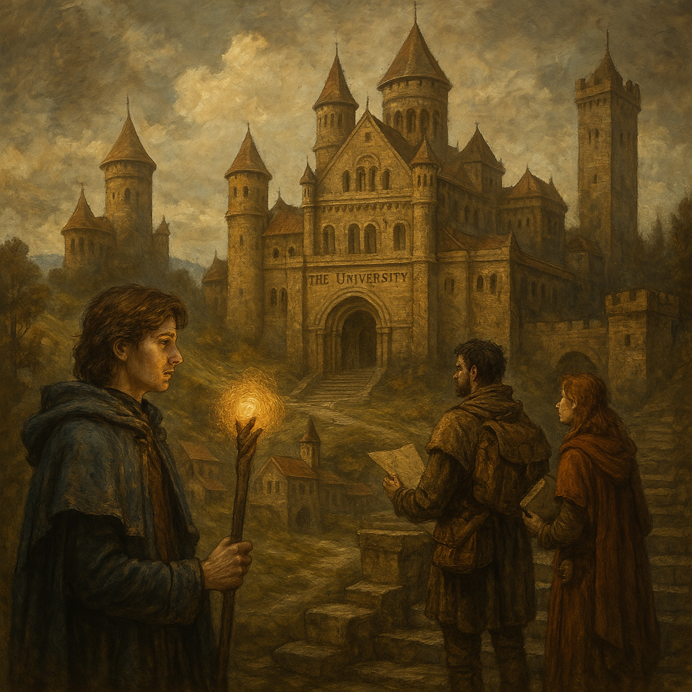

Chapter 4: Knowledge Unbound
Hand of the Lich

Hand of the Lich
15051.05.03
日落前，冒險者們來到了大學城的入口。給守衛看了 YHWH 的學者證後，大家便輕鬆地走入了大學城。
YHWH 得知現在大學城的城主為研究帝國歷史的 Shalan Hartlow，歷史區的區長為研究各種宗教的 Andrea Day，科技區的區長為研究機器人的 Paige McDyss，自然魔法區的區長為研究水魔法的 Jaylin Avalos，最後，法師魔法區的區長則為研究魔法古籍的 Janice Read。
YHWH 過去曾來過大學城數次，寄居在他的師父烈焰術士 Chandra 博士家。這次他一樣帶著夥伴們，來到 Chandra 家門口，發現 Chadra 正出遠門修行中。無奈之下，YHWH 只好透過自己的火焰魔法，將 Chandra 的門打開了。Chandra 家整棟樓被火燃起，然後大家的腦中傳出了「Welcome home.」的聲響。
Chandra 家的一樓是大廳，二樓是他的研究室和圖書館，三樓是廚房以及陽台，地下室則是他的寢室以及供學徒居住的通鋪。YHWH 熟門熟路的帶著大家，然後到三樓煮咖啡和烤麵包。經過了走在死亡邊緣的一整天，大家都累了。YHWH 決定到外面打水，回來時，看見了一名貌似學徒的人在 Chandra 家門口東張西望。他禮貌性地詢問，那人卻好像很疑惑，不久後便跑走了，讓 YHWH 也有點擔心。他知道他見過那個人，但並不熟悉。晚上 YHWH 和 Siri 在圖書館看了看書，不久後大家便到地下通鋪過夜，YHWH 則把睡袋搬到三樓陽台睡去。
15051.05.04
一早，YHWH 到中央圓環領取了不少食糧回來。大家決定先去拜訪城主，以免在大學城遇到什麼問題。
在 YHWH 的帶領下，大家來到中央塔的一樓，拜訪今年的城主，Shalan Hartlow。在大家紛紛向城主自我介紹後，城主表示大家看起來都沒問題，可以在大學城好好拜訪，遇上任何問題，找他就可以，也歡迎來找他喝下午茶。
冒險者們走出中央塔，討論著下一步應該先做什麼。這時，Siri 和 Ron 意識到了附近似乎有個可疑的人正在偷聽他們。Ron 一個箭步，就抓住了躲在角落的鬼祟人影並質問他。那人表示自己聽到他們在討論 Roline，他來到大學城的目的就是為了救出 Roline。冒險者們發現他似乎知道些東西，於是找了個巷弄，開始審問他。透過 YHWH 的魔法，這位名叫伊的人類語氣似乎比較軟了些，他表示自己是麥克嵩人，曾目睹 Roline 從人類變成陶瓷的那一刻。在那之後，他便把自己畢生賺來的積蓄都拿去麥克嵩的小黑屋問關於拯救 Roline 的方法。語句之間，冒險者們意外發現這名伊之前似乎和他們的前夥伴 Paladin 和 Sugalu 一起行動過。不過伊對 Roline 的執著似乎讓 Ron 對他懷有額外的敵意。
伊也透露給他們自己是名盜賊，觀察了幾天後，趁著守衛交班的時候翻進城牆內。他也表示發現 Roline 的靈魂似乎是被攔截了，而攔截他的人，正式現在歷史區的區長，研究宗教的 Andrea Day。他表示為了拯救 Roline，他打算潛入 Andrea 的研究室，如果被發現了，把 Andrea 殺死也無所謂。面對這名不受控制的衝動小子，冒險者們十分苦惱。冒險者們試圖強迫他藉由點按 Mr. Moon 的名片，強制傳送回位在麥克嵩的 Indigo 身邊，但意外的發現不知道是什麼原因，傳送沒能奏效，因此 Ron 決定直接將他敲暈。在開始有民眾注意到的情況下，冒險者們趕緊準備出發，Beau 一肩扛起已經昏迷的伊，大家就這樣跟著路人的說明，走到了歷史區 Andrea 研究室的門口。
YHWH 敲了敲門，打開門的正是他昨晚看見的那名鬼祟學徒，學徒也嚇了一大跳。他自我介紹是 Andrea 的助理，名叫 Melvin，但自己沒什麼學術能力，只能幫忙做些打雜的事情，像是打掃、整理東西、管理叫來的貨之類。在 Melvin 的叮囑下，大家得知 Andrea 十分高傲，在他面前絕對不能表現出自己比他厲害的模樣。語畢，Melvin 讓大家走進 Andrea 的研究室，他則快步溜回地下室的房間。
冒險者們也不清楚 Andrea 人在哪裡，只好慢慢上樓。二樓有股瀰漫在空中的灰色氣體。冒險者們敲了敲左手邊的門，沒有反應。敲了敲右手邊的門，裡面傳來一名男子的聲音，要大家等一下。幾分鐘後，一名兩眼通紅，看起來精神恍惚的男子打了開門，表示自己就是 Andrea Day。大家進入了他空氣非常混濁的辦公室，看見 Andrea 正享受著他的毒品。他也給了大家一大包的「Lemon」讓大家享用。雖然精神恍惚，但冒險者向 Andrea 提出的問題，他都能很好的回答，也幾番跑到隔壁書房拿書借給冒險者們看。研究室內則是一本書也沒有，但留有不少做過宗教儀式的畫記。
冒險者們問起了關於月神教靈魂轉移的儀式，Andrea 表示自己近年有在研究攔截靈魂的方法，這讓冒險者們的吸引力都被吸住了。經過各種迂迴的詢問，Andrea 從隔壁拿來了一本書，表示裡面現在就關押了一名被攔截的靈魂。大家馬上就理解到，這很有可能是 Roline 的靈魂。
詢問起如何進行月神教的靈魂轉移儀式，Andrea 表示需要犧牲一名無辜的靈魂。冒險者們提議用這名剛剛被他們抓住的伊作為祭品，但 Andrea 表示他看起來就不是無辜的，因此不適合。他提到自己的助理 Melvin 似乎是個很好的選擇，於是 Ron、Midori 和 Beau 便下樓去找 Melvin。Siri 對此感到不是很能接受，於是默默的走到研究室外，不想面對這些。
下到一樓，Midori 和 Beau 表示自己也不太能接受這樣的事，因此帶著 Beau 兩人先到外頭等待，Ron 則到了地下室，和 Melvin 表示他的老闆找他，要他上樓去。
門外，Midori 看見一個奇怪的生物剛好經過這裡，那是一名看起來像雪人的生物。雪人自我介紹名叫雪寶，是研究食物歷史的吉拿棒教授的助理，而在他的口中，區長 Adrea 似乎被他們稱為「無菜單料理」。同時，雪寶也表示歷史區平常路上都沒有人，竟然能看到有人出現，令他感到非常意外。面對這說話顛三倒四的生物，Midori 感到十分困惑，Beau 則不知所措，趕緊回到房子內去了。Midori 感應到這生物應該是個魔法生物。Midori 突然想起，這雪人也許是個無辜之人，如果是魔法生物的話，就算被犧牲，再造出來也可以，因此透過魔法，引導雪寶走進了 Andrea 家。
帶著雪寶來到了研究室外，Melvin 正好被扛到桌子上去，而原本在桌子上的伊則被推到了桌下。Melvin 看著雪寶，表示自己有搞砸過 Andrea 交付的任務，自己不是無辜的，但是這名雪人看起來就是無辜的。雪寶感到困惑，他不知道自己面對的到底是什麼。眼看鬧劇停不下來，Andrea 一把抓起 Melvin，按在桌上，另一手則按在禁錮 Roline 靈魂的書上，念起咒語，接著 Melvin 身體僵直，一動也不動。大家看著，心裡想著，按照之前 Andrea 的說明，Roline 的靈魂，應該是回到自己的軀體去了吧。
Midori 帶著困惑的雪寶走出了 Andrea 家。為了表示自己的感激，雪寶挖起身上一塊雪塊，並掏出了一根甜筒，把雪塊放上去，要 Midori 一定要吃，如果不吃的話會被詛咒。語畢，他便離開了，留下傻眼的 Midori。
同時間，Siri 到了地下室，試圖打開 Melvin 房間的鎖，想打探看看任何有用的資訊，但他的鑰匙似乎打不開。這時 Midori 剛好從門外回來，來到地下室，看見 Siri。他試著將手上已經溶了一半的冰淇淋塞給 Siri，但 Siri 不想接受這來路不明的東西。眼看冰淇淋快要溶完了，情急之下，Midori 只好趕快把冰淇淋吃完，確保自己不會被下奇怪的詛咒。
冒險者們疑惑著 Melvin 的身體怎麼處理，Andrea 說他的後院可以挖個洞埋起來，於是 Ron 便將 Melvin 逐漸陶瓷化的身體扛起，另一側則扛起還被綑綁住的伊，打算將他也埋了。其他冒險者們爭論著是否應該把伊給放了，但 Ron 沒在犹豫的，將兩個身體扛到後院去，開始挖洞，將伊丟入洞內，然後把陶瓷 Melvin 壓在上面。
對於剛剛發生的一切，Siri 感到十分低落。讓無辜之人這樣受害，不是他所認可的對的事。要不要繼續和這群冒險者們冒險，他的內心還沒有答案。不顧其他人還在屋內，Siri 決定先暫時脫隊。門外，Siri 看見一名人形生物向他快步走來，他沒有很想搭理。那名貓人詢問 Siri 是否知道怎麼去科技區，Siri 簡單回話後，便不再理他。貓人眼看得不到完整的答案，於是向此時剛走出來的冒險者們詢問。冒險者們得知他是名叫 Yamada Aoi 的人類，因為碰到一顆被寶石而被詛咒，變成貓人。Yamada 要去科技區尋找他過去的珠寶商師傅 Andronikos，或稱 Andy，請教。
冒險者們發現 Siri 不見了，在 Yamada 的帶領下，他們追上遠行的 Siri。Siri 表示自己需要靜一靜，晚上在茜卓博士家見。
冒險者們帶著 Yamada 來到科技區，在詢問附近的人後，得知 Andronikos 的住處。半身人 Andronikos 花了點時間，才搞清楚這名貓人是他過去的學徒 Yamada。冒險者們也聽見 Yamada 的解說，表示自己是和一名過去的夥伴 Mikheal Ducas 去群找名為「祖祖氣泡」的珠寶時，因為觸碰到了它，才化為貓人，而 Mikheal 試圖將他丟入山谷，但他卻活了下來。
Andronikos 向大家介紹了自己的珠寶收藏，也泡了他稱為茶的透明色熱飲給大家喝。大家向 Andronikos 詢問了關於科技區的事，決定等等可以去附近找一位名為 Alex 的機甲研究者，請教關於 Midori 和 Beau 機械手臂的事。離開前，Yamada 表示為了表達自己的謝意，之後可以找他或 Andronikos 鑑定珠寶，不用算錢。Andronikos 也拿了一些光澤閃耀的「茶葉」作為禮品送給冒險者們。
離開 Andronikos 的住處後，大家決定去找似乎就在附近的 Alex。Alex 是個看起來十分強勢的女子，對於說話較為直接的 YHWH 似乎有些兇惡。
Alex 初步評估金屬手臂的材質很稀有，甚至不需特別保養一樣能維持光澤，不會生鏽。他判斷這樣一隻手臂至少可以賣 100 枚金幣。Alex 將 Midori 的金屬手臂左右扭了一下，手臂很自然的就拆卸下來了，裝在他搬出來的木製模特兒身上，Alex 也將模特兒原本的手臂拆了下來給 Midori 可以戴著，多少可以讓身邊少一點異樣的眼光。Midori 決定接受 Alex 的提議，將自己的金屬手臂留在 Alex 的店舖，讓他研究，同時 Alex 也承諾會回答他關於另一隻手以及 Beau 的金屬手臂的相關消息。
在回去茜卓博士家前，大家決定去中央塔的禁書區逛逛。在和城主 Shalan 告知後，Shalan 輕鬆的就讓大家上到樓上禁書區找書了，像是根本沒有門禁一樣，也讓大家十分吃驚。
大家分別依照自己有興趣的主題，尋找關於歷史、宗教，以及食譜的方向找尋資料。YHWH 找到關於 Ron 可疑的手的消息，似乎除了手之外，還有一本書和一隻眼睛。書被留在大學城，而眼睛，最後一次被記載是存放在尖頂寺。
Ron 在食譜區旁看見了一間有著透明門的神秘房間，裡面似乎有個佇立在正中間的台子，上面放了一本書。不知道是出於直覺，還是什麼力量的影響，Ron 走向那房間，玻璃門滑開了。他逐漸靠近那本書，然後他就昏倒了。
到了約定的時間，YHWH、Samael、Midori 和 Beau 發現找不到 Ron，便分頭往不同樓層尋找，也去和 Shalan 詢問。他們找到了那間神秘的房間，裡頭只剩下空蕩蕩的台子，就連想像中應該要有的魔法力量也感應不到。而當然，Ron 也不在那裡。YHWH 隱約感覺和 Ron 一起消失的那本書，就是他讀到和手與眼睛有所連結的那本書……
大家不知所措，但也沒事可做，只好先離開中央塔，回到茜卓博士家去。少了 Siri 和 Ron，接下來應該要等誰回來再繼續行動？還是該離開大學城了？
睡前，Samael 和 Midori 決定去找還沒回來的 Siri。關於 Ron，他們從在禁書區得到的消息，很有可能他已經無法控制了，會去什麼地方、做什麼事情也很難說。大門一開，Siri 就坐在門口，等著。Midori 趕緊喚他進來，告訴他 Ron 可能發生的事。Siri 感受到這緊迫的危機，原本低落的心情現在變得更複雜。大家決定先睡覺再說。
然而，這一晚，除了 Midori 外，所有人都因為稍早吸食的 Lemon 而難以入睡。
虛空之中，Ron 睜開眼，周圍一片漆黑。或者更精確的說，周圍什麼都沒有。
他想起那本書。他感受到那本書融進了他的身體。他聽見了聲音。是龍語，那個他原本聽不懂，但現在卻完全理解的語言。
「Ron，你想起來我是誰了嗎？沒關係，你終究會想起來的。」
但是 Ron 還是沒有想起來。
他突然想起 Roline。一個瞬間，他的人回到了麥克嵩，Roline 的床前。終於恢復肉體的 Roline 正酣睡著。Ron 鬆了一口氣。
他想起還在大學城的夥伴們，一個瞬間，回到了茜卓博士家。地下通鋪，除了 Midori 外，其他人都輾轉難眠，但他們似乎沒看見 Ron。
Ron 再次回到 Roline 床前，取下他的一條綁帶，輕咬手指，用血液在上面留了言，並許了個願：凡是不懷好意靠近 Roline 的人，就會當場死亡。在他離開前，他似乎感受到了 Roline 翻了個身。
15051.05.05
一早，Midori 起床了，其他人有人剛睡著，有人則還睡不著。
此時的 Ron 已回到了茜卓博士家，在三樓廚房嘗試煮咖啡，但他似乎點不起火。在三樓陽台睡覺的 YHWH 發現他回來了，幫忙起了火之後，便跑到地下室通鋪睡覺了。Siri 睡不著，於是也到了三樓，看見回來的 Ron，拿了杯他煮的咖啡，同時問候他昨天到底發生了什麼事。Ron 似乎有點保留，但也聽不出來他到底發生了什麼可疑的事。
Midori 到了二樓圖書館探索，翻了翻書。他找到一整櫃茜卓博士的日記，特別翻找了有記載 YHWH 的那幾本，卻意外地撕下了其中一頁。圖書館內沒有別人，因此 Midori 也沒有特別當一回事。
Siri 跑回通鋪，叫醒大家，告訴大家 Ron 回來了，而且似乎樣貌有點變了：臉變得更顏色更深，而且上面好像有點印記。Ron 說的話也有些含糊其辭，閃爍跳躍，讓他感到 Ron 有所隱瞞。Siri、Beau 和從二樓若無其事地回來的 Midori 一起到三樓和 Ron 問話。
Midori 利用法術，控制 Ron 只能說實話，Ron 很有技巧的只回應部分事實，另外三人很難從中得到什麼有價值的消息，最終也只能回到地下室和其他人討論。
YHWH 回到三樓。此時他和 Ron 兩人從陽台看見了從遠方逐漸靠近的某個東西，那東西似乎是個火球。情急之下，Ron 跑到陽台，跳了出去，往中央塔的方向跑。YHWH 則看見那火球砸進茜卓博士家，那再熟悉不過的身影從火球中走了出來。房子肉眼所及之處，都在火海之中。地下室的眾人趕緊跑離房子。
茜卓博士一邊問話，一邊朝著 YHWH 砸火球。YHWH 不清楚茜卓博士怎麼突然從休假中回來，但他告知了茜卓博士有個髒東西：有著巫妖手臂的人在這裡。茜卓博士停止了對快要沒命的 YHWH 的攻擊，朝一樓走去。
房門打開，YHWH 和 Ron 以外的大家在門外看見身上已沒有火焰的茜卓博士，質問著他們有巫妖手的人去哪裡了。Midori 召喚出了他的馬，邀請茜卓博士坐上，帶著他朝中央塔奔去。
同時間，從陽台逃到家旁庭院的 YHWH 正在休息。他看見了一隻鳥朝他緩緩走來，而且用嘴喙不斷地戳他。他知道那是茜卓博士養的鳥，但是是什麼品種，他不清楚。
在中央塔外，Midori 與茜卓博士追上 Ron。Ron 開始繞著中央塔飛奔，Midori 和茜卓博士跟在後面，但全速的 Ron 完全追不上，很快他們就跟丟了。垂頭喪氣的茜卓博士開始遷怒周邊的各種東西，用他的火球到處亂噴，現場和災難沒兩樣。Midori 趕緊跑去找城主告知這件事，城主似乎對這件事也不意外，表示一段時間後茜卓博士就沒事了，不用太擔心。
離開中央塔，Midori 看見茜卓博士坐在塔外。他邀請茜卓博士上馬，一起回他家去，但茜卓博士婉拒了，表示想自己散散心。
從中央塔旁岔開，Ron 先到歷史區，想去看看被他埋起來的伊和 Melvin 是否還在洞裡，卻因為找不到區長家而作罷。Ron 決定找捷徑繞回茜卓博士家去。
巷弄之中，飛速的 Ron 被絆倒了。他抬頭一看，站在他眼前的是茜卓博士。「這裡沒有別人，就我們兩個。只會有一個結局，不是你死，就是我亡。」茜卓博士說完，準備發動攻擊。Ron 想逃開，但路被更熟悉這裡環境的茜卓博士堵死了。然而，Ron 的速度比茜卓博士快，連續揮拳幾下，茜卓博士的火還沒噴出來，看起來狀況就很差了。他叫出四團火球，分別朝 Ron 攻擊，然後爆開，但對 Ron 來說這並不足以殺死他。Ron 再度攻擊，原本只是想將茜卓博士打昏，但在最後一刻，茜卓博士原地炸開，Ron 也受了不少傷。再次睜開眼睛，地板上只剩下茜卓博士繡有火焰的皮衣了。Ron 拾起皮衣，朝茜卓博士家走去。他不知道這是不是代表茜卓博士死了，但他知道那不是他的本意。
茜卓博士家前，YHWH 帶著那隻鳥出現了。其他人還記得茜卓博士在跟著 Midori 前往尋找 Ron 前留下的狠話，只要他們意圖闖進他家，就會被火焰噴射，因此大家都不敢進去。Samael 看到新的動物夥伴，十分想收編他，但卻被 YHWH 安置在他的肩膀上，似乎十分聽話。大家對於這隻鳥是什麼鳥，沒什麼概念，剛回來的 Midori 隱約覺得這隻鳥應該是一隻鳳凰，但對於自己的記憶非常有自信的 Siri 很肯定這是一隻企鵝。
Ron 出現了。手上拎著茜卓博士的皮衣。不需多做說明，YHWH 直接對他攻擊。
YHWH 和 Ron 兩人都做了要把對方殺死的決心，衝突一發不可收拾。但在意外中 YHWH 放出了迷霧，將兩人隔在迷霧的兩端，也讓衝突暫時有個緩衝。經過其他夥伴居中交涉，兩人稍微冷靜。Midori 和 Beau 兩人牽著 Midori 的馬，讓昏迷後剛醒來，還被繩子綁死的 Ron 坐在上面，在 Samael 和 Siri 的帶領下穿過迷霧。
然而他們沒想到的是，走出迷霧後，馬上只剩下垂著的繩子。
對於 Ron 的消失，大家無所適從，但相對於 Ron，YHWH 更在乎的似乎是茜著博士遺物的消失。他的皮衣似乎隨著 Ron 一起不見了。YHWH 烙下狠話，要大家找到茜卓的皮衣再來找他，他自己則走入茜卓家，並將家門關上。
剩餘的其他人在還未散去的煙霧中，試圖尋找茜卓的皮衣，但只能找到破裂的碎片。大家將蒐集到的碎片整理了一下，敲了敲門，便將皮衣碎片遞給房子內的 YHWH。Midori 想起還得去見 Alex，拿回他的手臂，便召集大家一起去找 Alex，同時也留給 YHWH 一點療傷的空間。
回到昨日造訪的 Alex 工作舖，Alex 表示經過他的研究，Midori 的金屬手臂是由一種叫「滑銀」(Smooth Silver） 的稀有材料所製成的。這種原料在帝國內只知道克里歐門王國有機會能開採，但他的量非常稀少，不太可能足夠到製作一隻手臂，更何況兩隻。而能夠在妖精荒野取得這樣的材料，很有可能是因為妖精荒野的生態和這裡不太一樣，滑銀在那邊的量也許不那麼稀少。
為了確認 Alex 說的話是否可信，Siri 將 Beau 拉到店舖外，想詢問 Beau 關於妖精荒野的更多細節。Beau 表示過去他們大概只有在大帳篷附近活動，但在他被拉索斯教逼到帳篷外後，距離帳篷越遠，生態就越為不同，和帝國境內非常不一樣。依這樣的觀察，滑銀如果在帳篷外能開採到，也說得過去。
店舖內，Alex 將 Midori 的手臂從模特兒身上拿下，向 Midori 展示他小小的改造：他將手腕處旋轉，手臂內部有個可裝東西長管。Alex 協助 Midori 將手腕裝回身上後，大家便向 Alex 感謝，然後離開了。
大家回到中央塔拿了些餐點回茜卓博士家，和 YHWH 相會，然後好好的休息。
YHWH 發現隨著茜卓博士的逝去，原本的魔法鎖似乎失靈了。出於好奇，YHWH 想去看看過去茜卓博士鎖上的房間和研究室內有什麼東西。在 YHWH 拜託 Siri 後，兩人進入了茜卓博士的臥房，此時竟然沒有鎖上。裡面十分簡單，衣櫃內放有好幾件和茜卓博士時穿得一模一樣的皮衣。YHWH 拿了一件收了起來，作為紀念。兩人接著上去研究室，發現研究室鎖著。因為知道茜卓博士的性格，YHWH 十分擔心強行將門鎖破壞，會將整間房子燒壞，甚至整個大學城搞不好都會被燒掉。兩人非常小心的嘗試以最小程度的開鎖，同時其他夥伴也先逃到房子外。Siri 成功將門鎖打開，並用魔法手將門小力推開。從遠處看去，裡面似乎有個正在燃燒的東西。Siri 小心走去，發現一個從天花板垂掛而下的木板，上面有著用火燒著的字：「HA HA HA! MORON!」讓緊張的 Siri 噗哧的笑了出來。YHWH 和 Siri 放心下來，走入了研究室，卻發現茜卓博士似乎早就將研究室內所有東西都帶走了，只留下些燒焦的痕跡。
晚上，YHWH 和 Midori 兩人前往中央塔，想向城主詢問如何去尖頂寺的方法。城主表示他的線人有調查到，附近的方努爾市似乎有人建立了傳送門，從那邊去尖頂寺是最快的方法。Midori 表示方努爾市是自己的家鄉，自己卻不知道有這樣的傳送門。城主表示傳送門似乎是一名在那裡的臥底在當地最大的津菈教教堂地下室建造的，而根據他的線人，這名臥底被稱呼為「狐狸」。城主也允諾他會安排他的線人在方努爾市和大家會面。
YHWH 也問城主茜卓博士家現在沒有主人了，自己不知道有沒有機會能接下這個房子的管理權？城主拿出一張申請書，請 YHWH 簽名，手續非常簡單，茜卓博士的家現在成了 YHWH 的家了。YHWH 表示冒險者們預計接下來會先離開大學城一段時間，在沒有辦法安裝門鎖的情況下，該怎麼辦才好？城主表示他會請附近的街坊鄰居幫忙看房子。
打聽了如何從大學城前往方努爾市後，YHWH 和 Midori 便回家了。這次，不是茜卓博士家，而是 YHWH 的家。